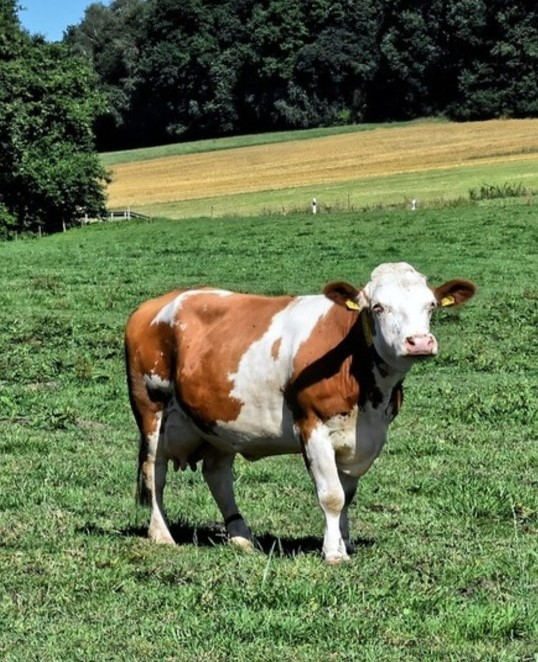

젖소
당신은 사교적이고 활동적이며 수용적이고 친절하며 낙천적사람이군요
현실적이고 실제적이며 친절하여 어떤 상황이든 잘 적응하며 수용력이 강하고 사교적입니다.
주위의 사람이나 일어나는 일에 대하여 관심이 많으며 사람이나 사물을 다루는 사실적인 상식이 풍부하네요.
때로는 조금 수다스럽고, 깊이가 결여되거나 마무리를 등한시하는 경향이 있으나,
어떤 조직체나 공동체에서 밝고 재미있는 분위기 조성 역할을 잘합니다.
당신의 유형은 꽤 많은 유형으로, 전 세계 인구의 대략 13%가 이 유형에 속해있다고 합니다.
